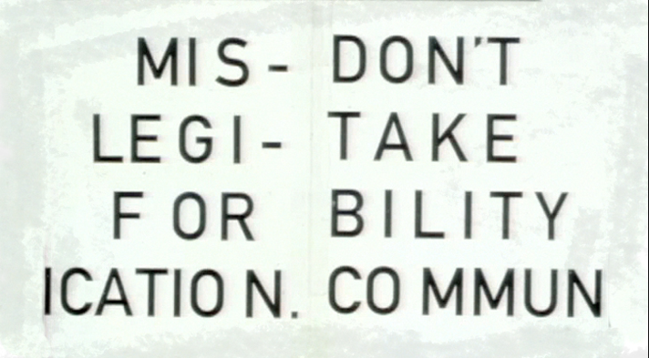

I appreciate your stance on learning and how we spend our lab time.
I’m glad to hear. Thanks for letting me know. I appreciate the feedback. As I always say, my job is not to teach you, but to help you learn.
I love seeing everyone’s final posters; seeing everything come together after critiques is really cool, especially seeing the posters from the other lab section for the first time!
Good stuff, isn’t it?
Found so many cool new fonts while talking to my classmates about their options for this project.
I did find some new fonts too. I’m glad I required 21st-century type. Didn’t want the usual suspects.
I hadn’t used Pinterest until last class and it definitely seems like a rabbit hole that you could go down of endlessly looking at pictures.
I never use it to look for images, only to collect them.
I would be interested to see some of how Adobe Paragraph Composer is coded. I am imagining hard rules about things like widows and relative line length. We talked today in CPE 101 about Python file manipulation, which involved some GREP and dealing with invisible characters. If you had a bunch of text that had an awkward rag or something, I’m sure you can use something like Python and GREP to make some rules to fix it.
To be honest, I don’t know the first thing about Python. But you’re right; it’d be cool to see how Adobe Paragraph Composer is coded.
I’m also trying to challenge myself to use a color palette that I’m less comfortable with. I often find myself falling back on the same hues that I’ve always been drawn to, and I hope to expand my horizons by experimenting with new colors.
You need to use your references very consciously.
Interesting to hear people talk out the pros and cons of practicality versus inspiration in terms of why or why not to choose a font.
Since I was a student that I like this quote by David Carson: 
One of the comments you made in class was that someone’s design felt like it was afraid of white space. I feel like this is the exact problem I’ve always had--feeling uncomfortable with leaving a space unfilled or not knowing how to effectively implement white space. This is something I hope to work on with my type specimen booklet.
It’s normal. Just try to get some blank space there even if it feels weird to you. If it’s too much, I’ll let you know.
I signed up to get specimens from Emigre and I’m excited to get some in the future!
I’m glad they still offer it.
My Pinterest board felt “meh” up until I collected 30 pins and had a breakthrough in what (I think) fits the typeface well.
Sometimes it takes a while. That’s the great thing about the references board, it takes you to visual languages you wouldn’t think about on your own.
Who are some notable designers that you would recommend reading about? We encounter a lot in class but I wonder if there are a few in particular that are especially outstanding.
I’ll go with the ones on the list for the grid poster assignment. But also, you want to read Robert Bringhurst’s The Elements of Typographic Style.
I honestly still have a hard time working with the small details of typography, especially dealing with the look of paragraphs, but the tips in the typographic details gave me a better understanding.
You’ll get there.
So many typefaces have such interesting histories of why they were designed or what they were inspired by!
They do! I’m glad that I’m not the only nerd who finds it interesting.
Those details like keeping a pronoun with the verb it is related to are some nice little practices that almost invisibly improve comprehension.
You are correct.
Can we include illustrations in our pamphlet?
You can. But make sure that the type family is the main character in your work.
Finally, I want practice “designing with a purpose.” I think this final project will really help me, since one of the goals is to create a design that effectively conveys the feel of the typeface as well as the intended use.
As far as “designing with a purpose” goes, I’d argue that the type comparison poster was a better example, where the task at hand was more specific. Teaching the differences between typefaces is a more targeted goal than communicating the general vibe of a type family.
I’m excited to dive into the pamphlet. Something that I’m struggling with is how to communicate the vibe of the font that I’ve chosen. It’s a fun task but I wonder if there are principles behind it, since I feel like I’m doing it off of subjective opinions on what fits the aesthetic.
Subjectivity will be part of it.
I’ve learned tat type specimens can range from pretty boring to very engaging. My favorites are those that show more random examples of the typeface in use rather than laying out a chart of all of the glyphs.
Then you know what to shoot for.
Emigre is super cool, I’m excited to get their newsletters!
Yes, Emigre is awesome.
I’m not going to procrastinate, I’m not going to procrastinate, I’m not going to procrastinate…
Ok, I trust you. I do. I really do. You’re not going to procrastinate. Not all, not you, no. I do trust you.
I’ve really enjoyed this class! You’re a great teacher and your classes are structured really well—I feel like it’s easy to learn in your classes. I’m excited for 339 next quarter!
Thanks so much. I am too!
Have a great break!
You too! All of you, please enjoy the break, drive safe, stay healthy, and eat good food!